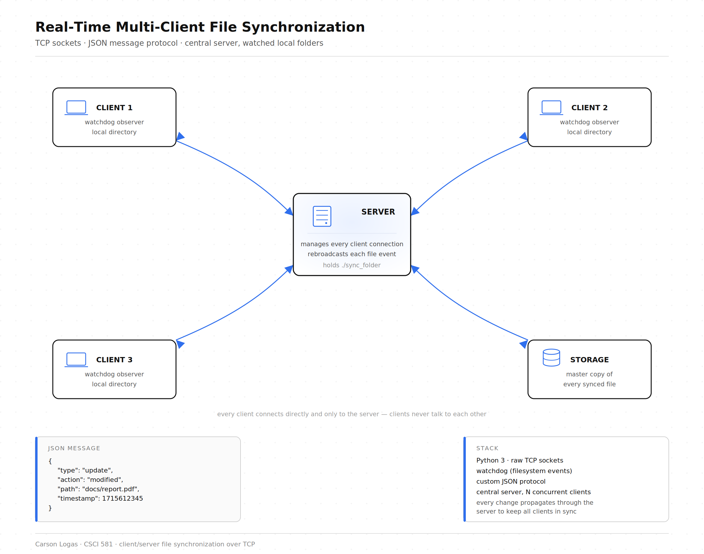

Computer Networks final project. A central server and any number of clients
keep a shared folder in sync over raw TCP sockets — edit a file on one
machine and every other connected client picks up the change within a second,
similar in spirit to a minimal Dropbox built entirely on top of the socket API.
The system is a classic star topology: a server.py process holds
the authoritative copy of the shared folder in server_storage/,
and any number of client.py instances connect to it, each watching
its own local folder. Every accepted change flows through the server, which
persists it and rebroadcasts it to every other connected client.
Wire protocol. TCP is a byte stream with no built-in message
boundaries, so every message is framed as a 4-byte big-endian length prefix
followed by that many bytes of UTF-8 JSON. Both sides read the prefix first,
then read exactly that many bytes before decoding — a standard
length-prefixing pattern that avoids partial-message parsing.
Change detection. Clients don't hook into OS filesystem
events; instead each client re-snapshots its watched folder once a second
(path, type, mtime, size for every file and folder) and diffs that snapshot
against the previous one to derive a list of create_file,
update_file, delete_file, create_folder,
and delete_folder actions to send.
Initial sync. When a client connects, the server walks
server_storage/ and replays it as a stream of
create_folder/create_file messages before accepting
any changes from that client — the client wipes its local folder first,
so it always starts from a clean, authoritative state rather than trying to
merge with whatever was there before.
Concurrency. The server spawns one thread per connected
client; each client runs a background listener thread for incoming pushes
from the server alongside a polling timer thread that watches the local
folder, with a lock guarding the shared snapshot and client-list state on
each side.

Every client connects directly and only to the server — clients never talk to each other.
Design decisions
Changed files are sent in full (hex-encoded) rather than diffed or chunked
— simpler to reason about and sufficient for the scale of a class
project, at the cost of re-sending an entire file on every save.
Conflict resolution is sidestepped entirely: a client's folder is wiped and
rebuilt from the server's broadcast on every connect, and the server is the
single point every change passes through, so there's no local/remote merge
logic to get wrong.
Polling once a second trades latency and CPU efficiency for portability
— no dependency on platform-specific filesystem-event APIs
(inotify, ReadDirectoryChangesW), at the cost of
up to a one-second delay before a change is even noticed.
Limitations
No authentication or encryption — the socket is a plain, unauthenticated TCP connection meant for local/LAN demoing, not a real network deployment.
No conflict resolution for two clients editing the same file within the same poll window; the later write silently wins.
Every save retransmits the whole file, so it doesn't scale well to large files or high edit frequency.